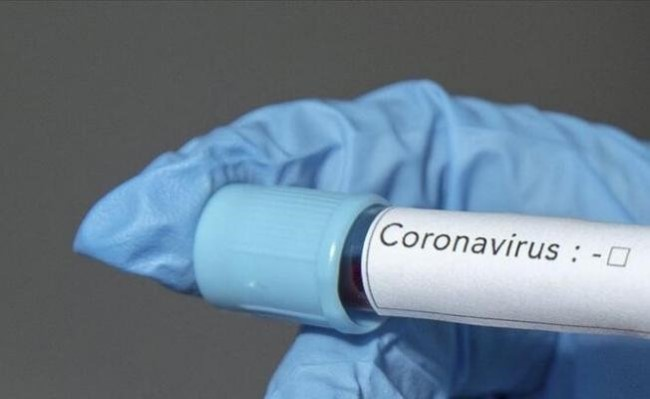
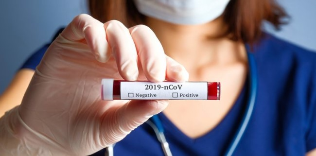
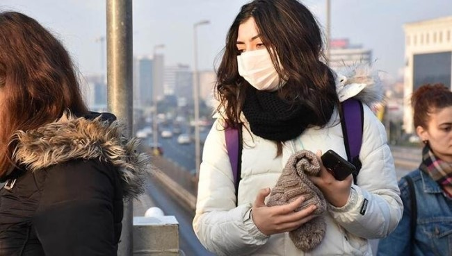
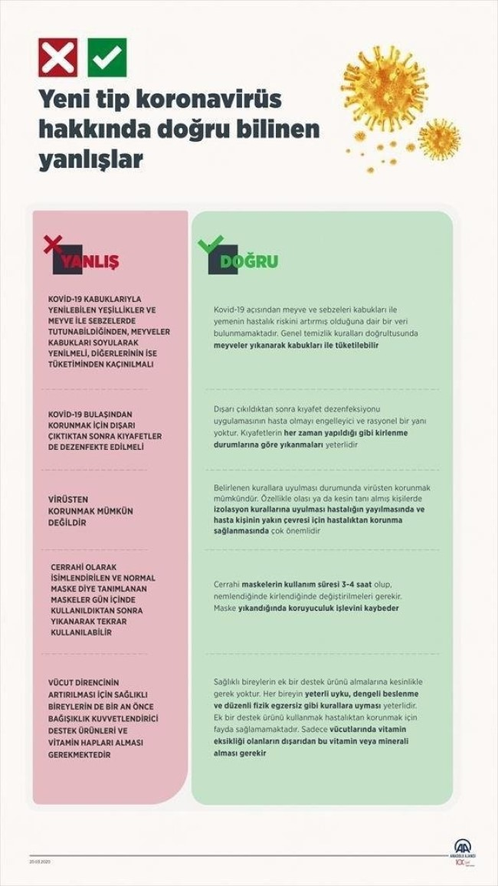

Çin'den dünyaya yayılıp 10 binden fazla insanın hayatını kaybetmesine yol açan koranavirüse karşı mücadele sürerken doğru bilinen yanlışlar konusunda Sağlık Bakanlığı Koronavirüs Bilim Kurulu Üyesi Prof. Dr. Alpay Azap önemli bilgiler paylaştı. Alpay Azap, "Ek bir destek ürünü kullanmak, hastalıktan korunmak için fayda sağlamamaktadır. Sadece vücutlarında vitamin eksikliği olanların dışarıdan bu vitamin veya minerali alması gerekir. Kovid-19 açısından meyve ve sebzeleri kabukları ile yemenin hastalık riskini artırmış olduğuna dair bir veri bulunmamaktadır. Genel temizlik kuralları doğrultusunda meyveler yıkanarak kabukları ile tüketilebilir. Dışarı çıkıldıktan sonra kıyafet dezenfeksiyonu uygulamasının hasta olmayı engelleyici ve rasyonel bir yanı yoktur. Kıyafetlerin her zaman yapıldığı gibi kirlenme durumlarına göre yıkanmaları yeterlidir." ifadelerini kullandı.
Dünya genelinde görülen ve ölümlere neden olan yeni tip koronavirüsten (Kovid-19) korunmak için sağlıklı kişilerin ek bir destek ürünü kullanmasının gerekmediği, sadece vücutlarında vitamin eksikliği olanların, dışarıdan bu vitamin veya minerali almasının uygun olduğu belirtildi.
Sağlık Bakanlığı Koronavirüs Bilim Kurulu Üyesi ve Ankara Üniversitesi (AÜ) Öğretim Üyesi Prof. Dr. Alpay Azap, AA muhabirine yaptığı açıklamada, Kovid-19 hakkında doğru bilinen yanlışlara ilişkin bilgi verdi.
Çin'in Vuhan kentinde ortaya çıkan ve Dünya Sağlık Örgütü (DSÖ) tarafından "pandemi" ilan edilen Kovid-19 ile mücadelede doğru bilginin önemine işaret eden Prof. Dr. Azap, tedbirli olunması ve Sağlık Bakanlığı tarafından açıklanan hijyen, önlem ve karantina kurallarına uyulması gerektiğini vurguladı.
Prof. Dr. Azap, Kovid-19'a ilişkin en çok merak edilen soru ve cevapları şöyle sıraladı: YANLIŞ: Kovid-19 kabuklarıyla yenilebilen yeşillikler ve meyve ile sebzelerde tutunabildiğinden, meyveler kabukları soyularak yenilmeli, diğerlerinin ise tüketiminden kaçınılmalı. DOĞRU: Kovid-19 açısından meyve ve sebzeleri kabukları ile yemenin hastalık riskini artırmış olduğuna dair bir veri bulunmamaktadır. Genel temizlik kuralları doğrultusunda meyveler yıkanarak kabukları ile tüketilebilir YANLIŞ:Kovid-19'dan korunmak için dışarı çıktıktan sonra kıyafetler de dezenfekte edilmeli. DOĞRU: Dışarı çıkıldıktan sonra kıyafet dezenfeksiyonu uygulamasının hasta olmayı engelleyici ve rasyonel bir yanı yoktur. Kıyafetlerin her zaman yapıldığı gibi kirlenme durumlarına göre yıkanmaları yeterlidir. YANLIŞ:Virüsten korunmak mümkün değildir. DOĞRU:Belirlenen kurallara uyulması durumunda, virüsten korunmak mümkündür. Özellikle olası ya da kesin tanı almış kişilerde, izolasyon kurallarına uyulması, hastalığın yayılmasında ve hasta kişinin yakın çevresi için hastalıktan korunma sağlanmasında çok önemlidir. YANLIŞ:Cerrahi olarak isimlendirilen ve normal maske diye tanımlanan maskeler, gün içinde kullanıldıktan sonra yıkanarak tekrar kullanılabilir. DOĞRU:Cerrahi maskelerin kullanım süresi 3-4 saat olup, nemlendiğinde kirlendiğinde değiştirilmeleri gerekir. Maske yıkandığında koruyuculuk işlevini kaybeder. YANLIŞ: Vücut direncinin artırılması için sağlıklı bireylerin de bir an önce bağışıklık kuvvetlendirici destek ürünleri ve vitamin hapları alması gerekmektedir. DOĞRU:Sağlıklı bireylerin, ek bir destek ürünü almalarına kesinlikle gerek yoktur. Her bireyin yeterli uyku, dengeli beslenme ve düzenli fizik egzersiz gibi kurallara uyması yeterlidir. Ek bir destek ürünü kullanmak, hastalıktan korunmak için fayda sağlamamaktadır. Sadece vücutlarında vitamin eksikliği olanların dışarıdan bu vitamin veya minerali alması gerekir."
